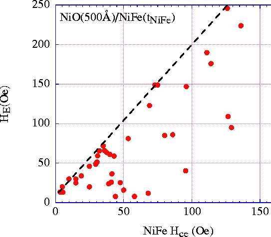

Figure 6:The exchange anisotropy field, H
E for a wide variety of NiO-500Å/NiFe-t
NiFe films plotted vs. the easy-axis coercivity, H
ce. The dotted line is a guide to the eye
indicating the relationship H E = 1.8 H
ce + 14 Oe, so the H E to H
ce ratio has a limiting value of about 1.8. This
value appears to be a characteristic of the AF material since
the ratio observed for NiCoO/NiFe bilayers typically exceeds
this value. AF/NiFe bilayers using Mn-based antiferromagnetic
layers greatly exceed this value, giving much less coercivity
per unit exchange anisotropy shift.